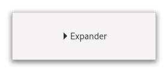

Class
GtkExpander
Description [src]
final class Gtk.Expander : Gtk.Widget {
/* No available fields */
}GtkExpander allows the user to reveal its child by clicking
on an expander triangle.

This is similar to the triangles used in a GtkTreeView.
Normally you use an expander as you would use a frame; you create
the child widget and use gtk_expander_set_child() to add it
to the expander. When the expander is toggled, it will take care of
showing and hiding the child automatically.
Special Usage
There are situations in which you may prefer to show and hide the
expanded widget yourself, such as when you want to actually create
the widget at expansion time. In this case, create a GtkExpander
but do not add a child to it. The expander widget has an
[property@Gtk.Expander:expanded[ property which can be used to
monitor its expansion state. You should watch this property with
a signal connection as follows:
static void
expander_callback (GObject *object,
GParamSpec *param_spec,
gpointer user_data)
{
GtkExpander *expander;
expander = GTK_EXPANDER (object);
if (gtk_expander_get_expanded (expander))
{
// Show or create widgets
}
else
{
// Hide or destroy widgets
}
}
static void
create_expander (void)
{
GtkWidget *expander = gtk_expander_new_with_mnemonic ("_More Options");
g_signal_connect (expander, "notify::expanded",
G_CALLBACK (expander_callback), NULL);
// ...
}
GtkExpander as GtkBuildable
The GtkExpander implementation of the GtkBuildable interface supports
placing a child in the label position by specifying “label” as the
“type” attribute of a
An example of a UI definition fragment with GtkExpander:
<object class="GtkExpander">
<child type="label">
<object class="GtkLabel" id="expander-label"/>
</child>
<child>
<object class="GtkEntry" id="expander-content"/>
</child>
</object>
CSS nodes
expander
╰── box
├── title
│ ├── arrow
│ ╰── <label widget>
╰── <child>
GtkExpander has three CSS nodes, the main node with the name expander,
a subnode with name title and node below it with name arrow. The arrow of an
expander that is showing its child gets the :checked pseudoclass added to it.
Accessibility
GtkExpander uses the GTK_ACCESSIBLE_ROLE_BUTTON role.
Instance methods
gtk_expander_get_resize_toplevel
Returns whether the expander will resize the toplevel widget containing the expander upon resizing and collpasing.
gtk_expander_set_resize_toplevel
Sets whether the expander will resize the toplevel widget containing the expander upon resizing and collpasing.
Methods inherited from GtkAccessible (10)
gtk_accessible_get_accessible_role
Retrieves the GtkAccessibleRole for the given GtkAccessible.
gtk_accessible_reset_property
Resets the accessible property to its default value.
gtk_accessible_reset_relation
Resets the accessible relation to its default value.
gtk_accessible_reset_state
Resets the accessible state to its default value.
gtk_accessible_update_property
Updates a list of accessible properties.
gtk_accessible_update_property_value
Updates an array of accessible properties.
gtk_accessible_update_relation
Updates a list of accessible relations.
gtk_accessible_update_relation_value
Updates an array of accessible relations.
gtk_accessible_update_state
Updates a list of accessible states. See the GtkAccessibleState
documentation for the value types of accessible states.
gtk_accessible_update_state_value
Updates an array of accessible states.
Methods inherited from GtkBuildable (1)
Properties
Gtk.Expander:resize-toplevel
When this property is TRUE, the expander will resize the toplevel
widget containing the expander upon expanding and collapsing.
Properties inherited from GtkWidget (34)
Gtk.Widget:can-focus
Whether the widget or any of its descendents can accept the input focus.
Gtk.Widget:can-target
Whether the widget can receive pointer events.
Gtk.Widget:css-classes
A list of css classes applied to this widget.
Gtk.Widget:css-name
The name of this widget in the CSS tree.
Gtk.Widget:cursor
The cursor used by widget.
Gtk.Widget:focus-on-click
Whether the widget should grab focus when it is clicked with the mouse.
Gtk.Widget:focusable
Whether this widget itself will accept the input focus.
Gtk.Widget:halign
How to distribute horizontal space if widget gets extra space.
Gtk.Widget:has-default
Whether the widget is the default widget.
Gtk.Widget:has-focus
Whether the widget has the input focus.
Gtk.Widget:has-tooltip
Enables or disables the emission of the ::query-tooltip signal on widget.
Gtk.Widget:height-request
Override for height request of the widget.
Gtk.Widget:hexpand
Whether to expand horizontally.
Gtk.Widget:hexpand-set
Whether to use the hexpand property.
Gtk.Widget:layout-manager
The GtkLayoutManager instance to use to compute the preferred size
of the widget, and allocate its children.
Gtk.Widget:margin-bottom
Margin on bottom side of widget.
Gtk.Widget:margin-end
Margin on end of widget, horizontally.
Gtk.Widget:margin-start
Margin on start of widget, horizontally.
Gtk.Widget:margin-top
Margin on top side of widget.
Gtk.Widget:name
The name of the widget.
Gtk.Widget:opacity
The requested opacity of the widget.
Gtk.Widget:overflow
How content outside the widget’s content area is treated.
Gtk.Widget:parent
The parent widget of this widget.
Gtk.Widget:receives-default
Whether the widget will receive the default action when it is focused.
Gtk.Widget:root
The GtkRoot widget of the widget tree containing this widget.
Gtk.Widget:scale-factor
The scale factor of the widget.
Gtk.Widget:sensitive
Whether the widget responds to input.
Gtk.Widget:tooltip-markup
Sets the text of tooltip to be the given string, which is marked up with Pango markup.
Gtk.Widget:tooltip-text
Sets the text of tooltip to be the given string.
Gtk.Widget:valign
How to distribute vertical space if widget gets extra space.
Gtk.Widget:vexpand
Whether to expand vertically.
Gtk.Widget:vexpand-set
Whether to use the vexpand property.
Gtk.Widget:visible
Whether the widget is visible.
Gtk.Widget:width-request
Override for width request of the widget.
Properties inherited from GtkAccessible (1)
Signals
Signals inherited from GtkWidget (13)
GtkWidget::destroy
Signals that all holders of a reference to the widget should release the reference that they hold.
GtkWidget::direction-changed
Emitted when the text direction of a widget changes.
GtkWidget::hide
Emitted when widget is hidden.
GtkWidget::keynav-failed
Emitted if keyboard navigation fails.
GtkWidget::map
Emitted when widget is going to be mapped.
GtkWidget::mnemonic-activate
Emitted when a widget is activated via a mnemonic.
GtkWidget::move-focus
Emitted when the focus is moved.
GtkWidget::query-tooltip
Emitted when the widgets tooltip is about to be shown.
GtkWidget::realize
Emitted when widget is associated with a GdkSurface.
GtkWidget::show
Emitted when widget is shown.
GtkWidget::state-flags-changed
Emitted when the widget state changes.
GtkWidget::unmap
Emitted when widget is going to be unmapped.
GtkWidget::unrealize
Emitted when the GdkSurface associated with widget is destroyed.
Signals inherited from GObject (1)
GObject::notify
The notify signal is emitted on an object when one of its properties has its value set through g_object_set_property(), g_object_set(), et al.